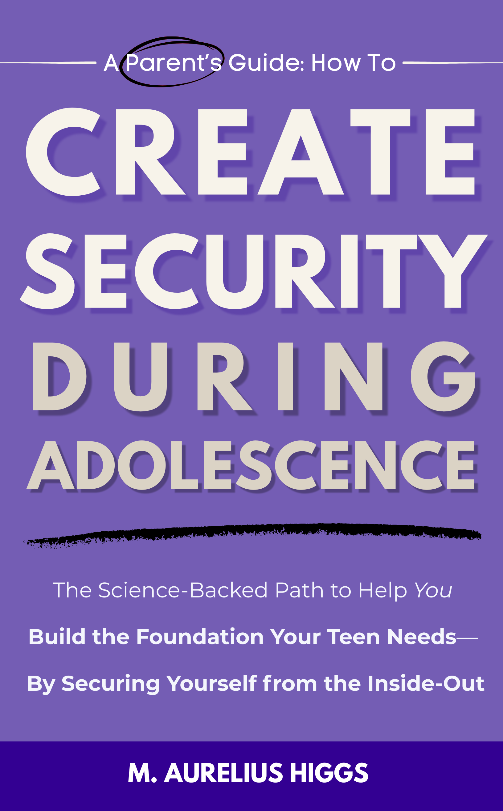

They need you to create the foundation they launch from. ParentWise is a guided, science-backed service that shows you how, from the inside out.
From extensive work across different cultural contexts, he saw a throughline. The science of how security develops during adolescence is sound. Works like Parenting from the Inside Out by Daniel J. Siegel and Mary Hartzell, and The Breakthrough Years by Ellen Galinsky lay the foundation.
You've been focused on your teen. The pulling away during a transition. The rootlessness of another move. The silence. The distance between you.
Sometimes they're struggling. Sometimes they're just processing. But you've already assumed what it means.
The real work doesn't start with them. It starts with you.
Not because you're the problem. Because you're the foundation. And what you're creating isn't just safety. It's the environment where your teen learns to create for themselves.
These are two separate responsibilities at this stage of development.
Your job is to create the secure foundation. Their job is to launch from it.
When you try to do their work for them, or neglect your own, both of you lose.
A teen who is safe but never learns to create something of their own doesn't learn to trust themselves.
A parent who focuses only on the teen's behavior never works on securing themselves. This creates a foundation their teen can't trust.
Safe. Seen. Soothed.
That matters. But it's not enough.
What builds lasting inner security is an invitation toward creation. A teen who is supported in creating something of their own, something that contributes to the world around them, doesn't just feel safe. They become sovereign.
Inner sovereignty. The kind of self-trust that holds when life inevitably knocks them off their feet.
Look Back
Understand your own adolescence. What you needed. How those needs were or weren't met. This is where your foundation begins.
Look at Now
The transition you and your teen are both going through. What they need from you at this stage. And how to secure it.
Look Forward
You create the environment where your teen creates something of their own and launches from it.
ParentWise is a guided, science-backed service for parents who want to do this work with intention and support. Not alone.
You don't have to figure this out alone. Start here.
